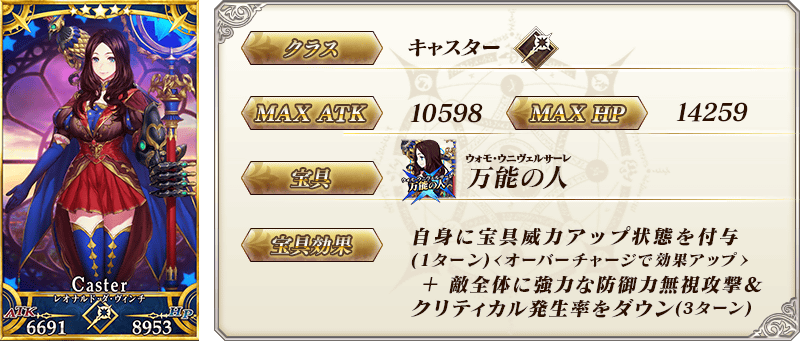
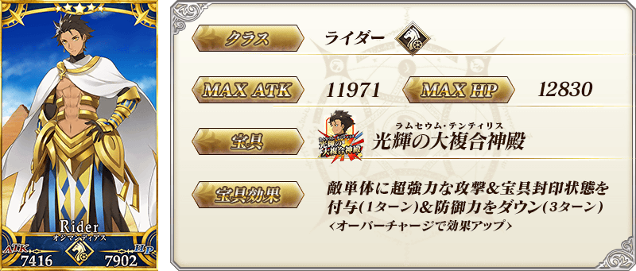
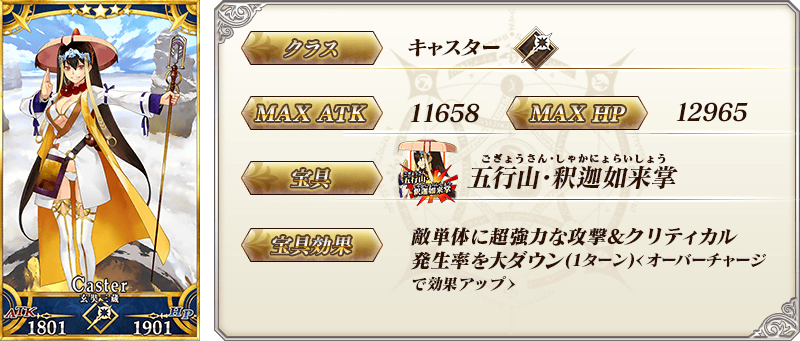
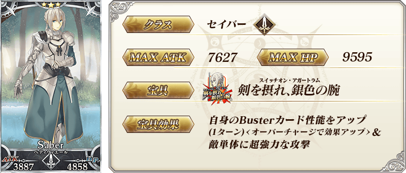
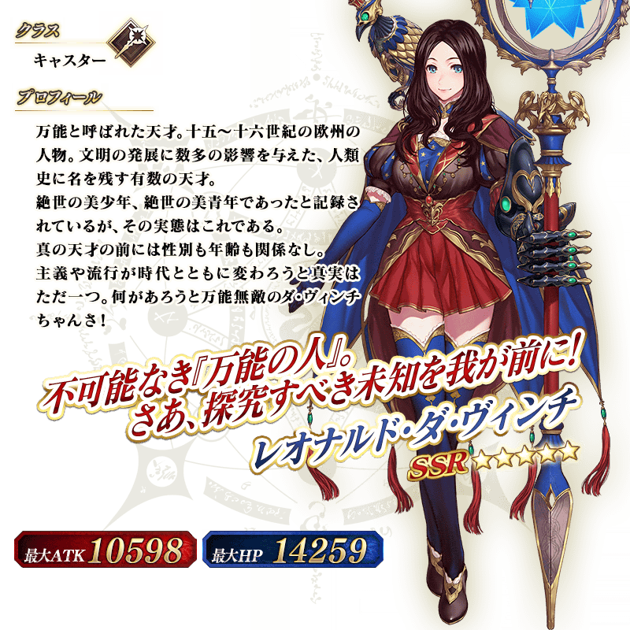
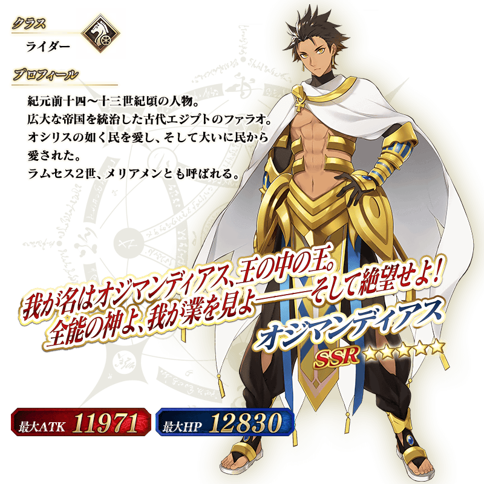
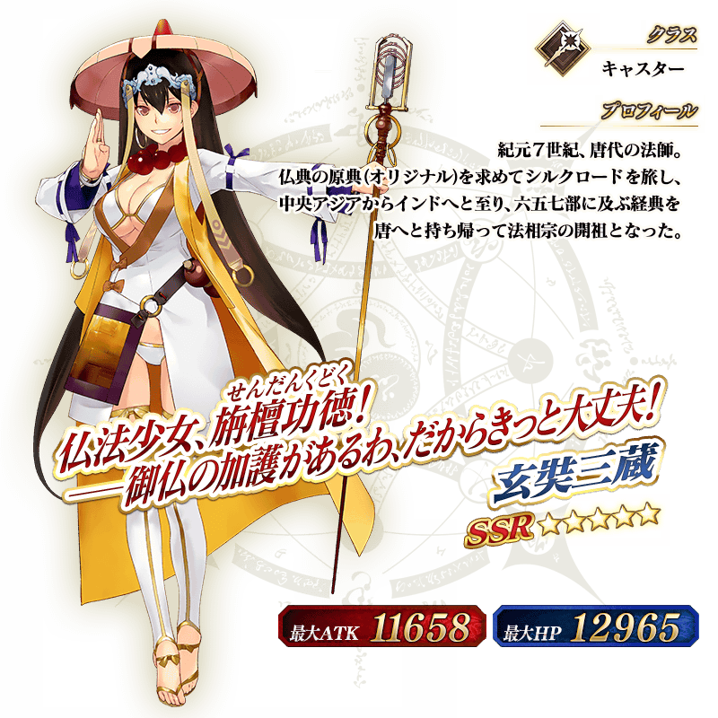

◆『「劇場版 Fate/Grand Order -神聖圓桌領域卡美洛- Paladin; Agateram」上映前夕Pick Up召喚(每日交替)』期間◆
期間:2021年5月10日(一) 17:00～5月24日(一) 11:59
舉辦期間限定『「劇場版 Fate/Grand Order -神聖圓桌領域卡美洛- Paladin; Agateram」上映前夕Pick Up召喚(每日交替)』！
本次從「劇場版 Fate/Grand Order -神聖圓桌領域卡美洛- Paladin; Agateram」關聯從者之中下述4位Pick Up！
▼期間限定從者
【每日交替Pick Up】
・★5(SSR)李奧納多・達・文西(Caster)
▼Pick Up從者
【每日交替Pick Up】
・★5(SSR)奧茲曼迪亞斯
・★5(SSR)玄奘三藏
【常駐Pick Up】 ・★3(R)貝德維爾
Pick Up期間中，Pick Up對象從者的出現機率提升！
詳情請在聖晶石召喚畫面左下的召喚詳細確認。
11次召喚中確定1張★4(SR)以上和確定1位★3(R)以上的從者！ ※確定★4(SR)以上包含從者和概念禮裝。
◆有關從者的注意◆
※請注意本召喚做為每日交替，下述的從者就算舉辦期間中也有不會被抽出來的日子。
・★5(SSR)李奧納多・達・文西(Caster)
※下述的從者在Pick Up期間結束後不會追加到故事召喚。
・★5(SSR)李奧納多・達・文西(Caster)
※本召喚的Pick Up期間中，透過故事進行所追加的下述從者就算通過各章前也能入手。
・★3(R)貝德維爾
※下述的從者在Pick Up期間結束後仍會在故事召喚被抽出。
・★5(SSR)奧茲曼迪亞斯
・★5(SSR)玄奘三藏
・★3(R)貝德維爾
◆『「劇場版 Fate/Grand Order -神聖圓桌領域卡美洛- Paladin; Agateram」上映前夕Pick Up召喚(每日交替)』Pick Up內容◆
| Pick Up期間 | Pick Up內容 | |||
|---|---|---|---|---|
| 每日交替Pick Up | 全天Pick Up | |||
| 5/10(一) 17:00～ 22:59 | ★5 奧茲曼迪亞斯 | ★3 貝德維爾 | ||
| 5/10(一) 23:00～5/11(二) 22:59 | ★5 玄奘三藏 | |||
| 5/11(二) 23:00～5/12(三) 22:59 | ★5 李奧納多・達・文西(Caster) | |||
| 5/12(三) 23:00～ 5/15(六) 22:59 |
★5 奧茲曼迪亞斯 ★5 玄奘三藏 ★5 李奧納多・達・文西(Caster) | |||
| 5/15(六) 23:00～5/16(日) 22:59 | ★5 奧茲曼迪亞斯 ★5 玄奘三藏 | |||
| 5/16(日) 23:00～5/17(一) 22:59 | ★5 奧茲曼迪亞斯 ★5 李奧納多・達・文西(Caster) | |||
| 5/17(一) 23:00～5/18(二) 22:59 | ★5 玄奘三藏 ★5 李奧納多・達・文西(Caster) | |||
| 5/18(二) 23:00～ 5/20(四) 22:59 |
★5 奧茲曼迪亞斯 ★5 玄奘三藏 ★5 李奧納多・達・文西(Caster) | |||
| 5/20(四) 23:00～5/21(五) 22:59 | ★5 奧茲曼迪亞斯 | |||
| 5/21(五) 23:00～5/22(六) 22:59 | ★5 玄奘三藏 | |||
| 5/22(六) 23:00～5/23(日) 22:59 | ★5 李奧納多・達・文西(Caster) | |||
| 5/23(日) 23:00～5/24(一) 12:59 | ★5 奧茲曼迪亞斯 ★5 玄奘三藏 ★5 李奧納多・達・文西(Caster) | |||
※請注意會以每日交替變更Pick Up的從者。
 ※上述「★5(SSR)李奧納多・達・文西(Caster)」的卡面為靈基再臨第1階段。
 ※上述「★5(SSR)奧茲曼迪亞斯」的卡面為靈基再臨第1階段。

 ※上述「★3(R)貝德維爾」的卡面為靈基再臨第1階段。
 ※上述「★5(SSR)李奧納多・達・文西(Caster)」的立繪為靈基再臨第1階段。
 ※上述「★5(SSR)奧茲曼迪亞斯」的立繪為靈基再臨第1階段。

介紹3位Pick Up從者的寶具演出！
【★5(SSR)李奧納多・達・文西(Caster)】
【★5(SSR)奧茲曼迪亞斯】
【★5(SSR)玄奘三藏】
強化「★5(SSR)奧茲曼迪亞斯」「★5(SSR)玄奘三藏」「★3(R)貝德維爾」的特別關卡「從者強化關卡」，在迦勒底之門永久追加。
不僅進行對象從者的強化，也可獲得聖晶石做為關卡通過報酬。
※請注意在從者強化關卡沒有文字冒險部份。
◆追加時間◆
2021年5月10日(一) 17:00～
◆開放條件◆
持有的強化對象從者，必須使其最終再臨。
※未持有對象從者的話，不會出現關卡。
※關卡沒有舉辦期限。

其他還有，『「劇場版 Fate/Grand Order -神聖圓桌領域卡美洛- Paladin; Agateram」上映前夕宣傳活動』同時舉辦！
關於詳情，請自下述橫幅確認。
■「劇場版 Fate/Grand Order -神聖圓桌領域卡美洛- Paladin; Agateram」上映前夕宣傳活動詳細情報